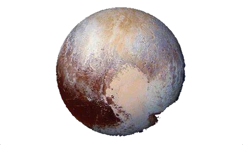

Volver
|  |
DefiniciónPlutón es un mundo complejo y misterioso con montañas, valles, llanuras, cráteres y glaciares. Se encuentra en el distante Cinturón de Kuiper. Descubierto en 1930, Plutón fue considerado durante mucho tiempo el noveno planeta de nuestro sistema solar. Pero después del descubrimiento de mundos similares intrigantes más profundos en el Cinturón de Kuiper, el diminuto Plutón fue reclasificado como planeta enano en 2006 por la Unión Astronómica Internacional. Plutón tiene solo alrededor de 1,400 millas de ancho. Con ese tamaño tan pequeño, Plutón tiene solo aproximadamente la mitad del ancho de los Estados Unidos. Está a unos 3.6 mil millones de millas de distancia del Sol y tiene una atmósfera delgada compuesta principalmente de nitrógeno, metano y monóxido de carbono. En promedio, la temperatura de Plutón es de -387°F (-232°C), lo que lo hace demasiado frío para sostener la vida. Plutón está orbitado por cinco lunas conocidas, la más grande de las cuales es Caronte. Caronte tiene aproximadamente la mitad del tamaño de Plutón mismo, lo que lo convierte en el satélite más grande en relación con el planeta que orbita en nuestro sistema solar. Plutón y Caronte a menudo se llaman un "planeta doble". ¿Cómo Plutón obtuvo su nombre?Plutón fue nombrado por una niña de 11 años. En 1930, Venetia Burney de Oxford, Inglaterra, sugirió a su abuelo que el nuevo descubrimiento se llamara como el dios romano del inframundo. Él envió el nombre al Observatorio Lowell y fue seleccionado. El lugar de Plutón en la mitología puede ser un poco confuso, así que le preguntamos a la Dra. Elizabeth Vandiver, presidenta del Departamento de Clásicos en el Whitman College en Walla Walla, Washington, que aclare los orígenes del nombre: "Plutón es el nombre del dios romano del inframundo, equivalente al griego Hades. Sin embargo, el nombre griego "Plouton" (del cual los romanos derivaron su nombre "Plutón") también se usaba ocasionalmente como un nombre alternativo para Hades. Pero Pluto es definitivamente la ortografía romana". Potencial para la VidaLa superficie de Plutón es extremadamente fría, por lo que es poco probable que la vida pueda existir allí. A tales temperaturas frías, el agua, que es vital para la vida tal como la conocemos, es prácticamente sólida. Sin embargo, el interior de Plutón es más cálido y algunos piensan que podría haber un océano en lo profundo. Tamaño y DistanciaCon un radio de 715 millas (1,151 kilómetros), Plutón tiene aproximadamente 1/6 del ancho de la Tierra. Si la Tierra fuera del tamaño de una moneda de cinco centavos, Plutón sería aproximadamente tan grande como un grano de maíz reventado. Desde una distancia promedio de 3.7 mil millones de millas (5.9 mil millones de kilómetros), Plutón está a 39 unidades astronómicas del Sol. Una unidad astronómica (abreviada como UA) es la distancia entre la Tierra y el Sol. Desde esta distancia, la luz solar tarda 5.5 horas en viajar desde el Sol hasta Plutón. Órbita y RotaciónLa órbita de Plutón alrededor del Sol es inusual en comparación con los planetas: es tanto elíptica como inclinada. La órbita de Plutón, de forma ovalada y de 248 años, puede llevarlo tan lejos como 49.3 unidades astronómicas (UA) del Sol, y tan cerca como 30 UA. (Una UA es la distancia media entre la Tierra y el Sol: alrededor de 93 millones de millas o 150 millones de kilómetros). Pero en promedio, Plutón está a 3.7 mil millones de millas (5.9 mil millones de kilómetros) de distancia del Sol, o 39 UA. Desde 1979 hasta 1999, Plutón estuvo cerca del perihelio, cuando está más cerca del Sol. Durante este tiempo, Plutón estaba realmente más cerca del Sol que Neptuno. LunasPlutón tiene cinco lunas conocidas: Caronte, Nix, Hydra, Kerberos y Styx. Este sistema de lunas podría haberse formado por una colisión entre Plutón y otro cuerpo de tamaño similar en los primeros tiempos del sistema solar. Caronte, la más grande de las lunas de Plutón, tiene aproximadamente la mitad del tamaño de Plutón mismo, lo que la convierte en el satélite más grande en relación con el planeta que orbita en nuestro sistema solar. Orbita a Plutón a una distancia de solo 12,200 millas (19,640 kilómetros). Para comparación, nuestra Luna está 20 veces más lejos de la Tierra. Plutón y Caronte a menudo se llaman un planeta doble. La órbita de Caronte alrededor de Plutón dura 153 horas, el mismo tiempo que tarda Plutón en completar una rotación. Esto significa que Caronte ni se levanta ni se pone, sino que se mantiene sobre el mismo lugar en la superficie de Plutón. El mismo lado de Caronte siempre mira a Plutón, un estado llamado bloqueo de mareas. Curiosidades sobre Plutón
|
Fuente: NASA
Volver